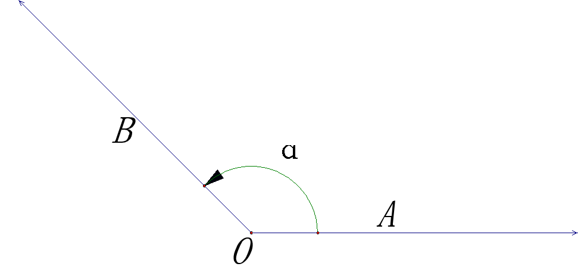
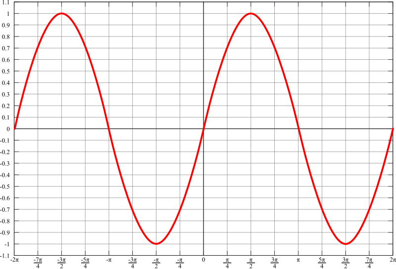
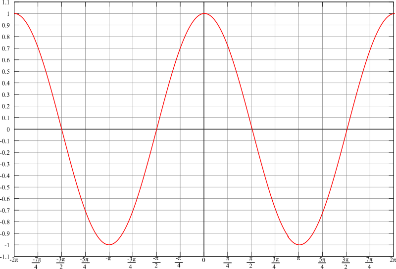
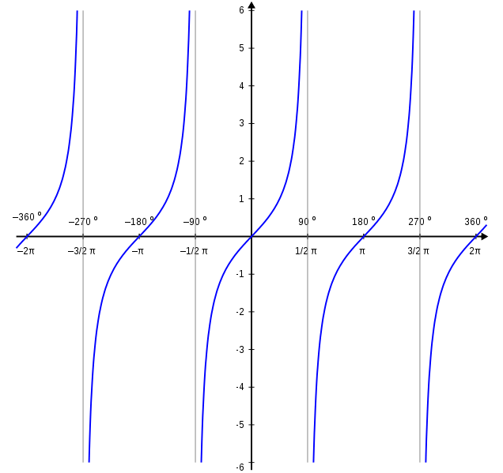
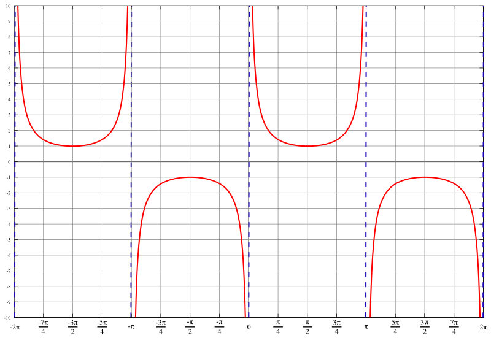
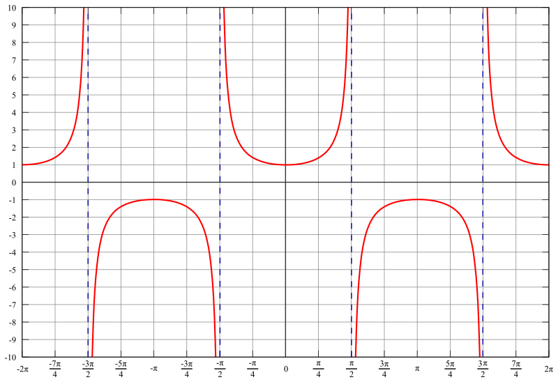
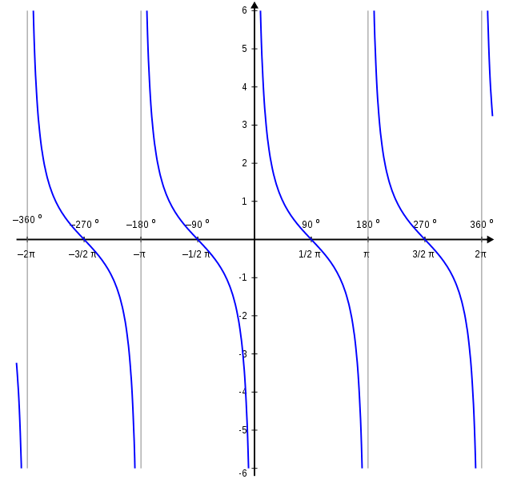

1. 三角函数¶
1.1. 弧度和角度¶
1.1.1. 概念¶
弧度和角度是度量 角的大小 的两种不同的单位

- 角度
两条射线从圆心向圆周射出, 形成一个夹角和夹角正对的一段弧
当这段弧长正好等于圆 周长的 360 分之一 时, 两条射线的夹角的大小为 1 度
- 弧度
两条射线从圆心向圆周射出, 形成一个夹角和夹角正对的一段弧
当这段弧长正好等于圆的 半径 时, 两条射线的夹角大小为 1 弧度
角 (弧度) = 弧长 / 半径
圆的周长是半径的 \(2\pi\) 倍,所以一个周角 (360度) 是 \(2\pi\) 弧度
半圆的长度是半径的 \(\pi\) 倍,所以一个平角 (180度) 是 \(\pi\) 弧度
1.1.2. 弧度和角度的换算¶
\(180^\circ = \pi \Leftrightarrow 1^\circ = \frac{\pi}{180}\)
\(90^\circ = 90 \times \frac{\pi}{180} = \frac{\pi}{2}\)
\(60^\circ = 60 \times \frac{\pi}{180} = \frac{\pi}{3}\)
\(45^\circ = 45 \times \frac{\pi}{180} = \frac{\pi}{4}\)
\(30^\circ = 30 \times \frac{\pi}{180} = \frac{\pi}{6}\)
1.2. 角的概念的推广¶
旋转 形成角
一条射线由原来的位置 OA, 绕着它的端点 O 按逆时针方向旋转到另一位置 OB, 就形成角 \(a\)
旋转开始时的射线 OA 叫做角 \(a\) 的 始边
旋转终止的射线 OB 叫做角 \(a\) 的 终边
射线的端点 O 叫做角 \(a\) 的 顶点
正角, 负角, 零角
按 逆时针 方向旋转所形成的角叫做正角
按 顺时针 方向旋转所形成的角叫做负角
当一条射线没有作任何旋转时, 认为它形成了一个零角
象限角
在直角坐标系中讨论角时, 使角的顶点与原点重合, 角的始边与 \(x\) 轴非负半轴重合, 则角的终边在第几象限, 就称这个角为第几象限角
终边落在坐标轴上的角不属于任何象限
终边相同的角
所有与角 \(a\) 终边相同的角, 都可以表示成角 \(a\) 与整数个周角的集合
\(S = \{ \beta | \beta = \alpha + k \cdot 2\pi, k \in Z \}\)
{kind=link}
1.3. 三角函数¶
单位圆半径为 \(r=1\)¶
- 三角函数
以角为自变量, 以单位圆上点的坐标或坐标的比值为函数值的函数
{kind=link}
1.3.1. 图像和性质¶
正弦 |
余弦 |
正切 |
|
|---|---|---|---|
|  |  |  | |
性质 |
|||
奇偶性 |
奇 |
偶 |
奇 |
定义域 |
\((-\infty, \infty)\) |
\((-\infty, \infty)\) |
\(\{\theta|\theta\neq k\pi+\frac{\pi}{2},k\in Z\}\) |
到达域 |
\([-1, 1]\) |
\([-1, 1]\) |
\((-\infty,\infty)\) |
周期 |
\(2\pi\) |
\(2\pi\) |
\(\pi\) |
特定值 |
|||
当x=0 |
0 |
1 |
0 |
最大值 |
\((2k\pi+\frac{1}{2}\pi,1)\) |
\((2k\pi,1)\) |
\(\infty\) |
最小值 |
\((2k\pi-\frac{1}{2}\pi,-1)\) |
\((2k\pi+\pi,-1)\) |
\(-\infty\) |
其他性质 |
|||
渐近线 |
N/A |
N/A |
\(x=\frac{\pi}{2}+k\pi\) |
根 |
\(k\pi\) |
\(k\pi-\frac{\pi}{2}\) |
\(k\pi\) |
临界点 |
\(k\pi-\frac{\pi}{2}\) |
\(k\pi\) |
|
拐点 |
\(k\pi\) |
\(k\pi-\frac{\pi}{2}\) |
|
不动点 |
0 |
0.7390851332152… |
0 |
余割 |
正割 |
余切 |
|
|---|---|---|---|
|  |  |  | |
性质 |
|||
奇偶性 |
奇 |
偶 |
奇 |
定义域 |
\(\{\theta|\theta\neq k\pi,k\in Z\}\) |
\(\{\theta|\theta\neq k\pi+\frac{\pi}{2},k\in Z\}\) |
\(\{\theta|\theta\neq k\pi,k\in Z\}\) |
到达域 |
\([1,\infty)\) |
\([1,\infty)\) |
\((-\infty,\infty)\) |
周期 |
\(2\pi\) |
\(2\pi\) |
\(\pi\) |
特定值 |
|||
当 \(x=0\) |
\(\infty\) |
1 |
\(\infty\) |
最大值 |
\(\infty\) |
\(\infty\) |
\(\infty\) |
最小值 |
\(-\infty\) |
\(-\infty\) |
\(-\infty\) |
其他性质 |
|||
渐近线 |
N/A |
N/A |
N/A |
根 |
无实根 |
无实根 |
\(k\pi+\frac{\pi}{2}\) |
临界点 |
\(k\pi-\frac{\pi}{2}\) |
\(k\pi\) |
|
拐点 |
\(k\pi\) |
\(k\pi-\frac{\pi}{2}\) |
|
不动点 |
0.8603335901348… |
正弦函数¶

正弦函数和余弦函数¶
{kind=link}
1.3.2. 公式¶
- 基础公式
\(\tan{\theta} = \frac{\sin{\theta}}{\cos{\theta}}\)
\(\cot{\theta} = \frac{\cos{\theta}}{\sin{\theta}}\)
\(\csc{\theta} = \frac{1}{\sin{\theta}}\)
\(\sin{\theta} = \frac{1}{\csc{\theta}}\)
\(\sec{\theta} = \frac{1}{\cos{\theta}}\)
\(\cos{\theta} = \frac{1}{\sec{\theta}}\)
\(\cot{\theta} = \frac{1}{\tan{\theta}}\)
\(\tan{\theta} = \frac{1}{\cot{\theta}}\)
- 勾股
\(\sin^2{\theta} + \cos^2{\theta} = 1\)
\(\tan^2{\theta} + 1 = \sec^2{\theta} = \frac{1}{\cos^2{\theta}}\)
\(\cot^2{\theta} + 1 = \csc^2{\theta} = \frac{1}{\sin^2{\theta}}\)
- 周期, 对称, 奇偶; 诱导公式
\(\sin{(\theta + 2k\pi)}(k \in Z) = \sin{\theta}\)
\(\cos{(\theta + 2k\pi)}(k \in Z) = \cos{\theta}\)
\(\tan{(\theta + 2k\pi)}(k \in Z) = \tan{\theta}\)
(关于原点对称)
(关于 \(y\) 轴对称)
\(\sin{(\pi + \theta)} = -\sin{\theta}\)
\(\sin{(\pi - \theta)} = \sin{\theta}\)
\(\cos{(\pi + \theta)} = -\cos{\theta}\)
\(\cos{(\pi - \theta)} = -\cos{\theta}\)
\(\tan{(\pi + \theta)} = \tan{\theta}\)
\(\tan{(\pi - \theta)} = -\tan{\theta}\)
(关于 \(x\) 轴对称)
\(\sin{-\theta} = -\sin{\theta}\)
\(\cos{-\theta} = \cos{\theta}\)
\(\tan{-\theta} = -\tan{\theta}\)
(关于 \(y=x\) 对称, 即横坐标与纵坐标对调)
\(\sin{(\frac{\pi}{2} - \theta)} = \cos{\theta}\)
\(\sin{(\frac{\pi}{2} + \theta)} = \cos{\theta}\)
\(\cos{(\frac{\pi}{2} - \theta)} = \sin{\theta}\)
\(\cos{(\frac{\pi}{2} + \theta)} = -\sin{\theta}\)
\(\tan{(\frac{\pi}{2} - \theta)} = \cot{\theta}\)
\(\tan{(\frac{\pi}{2} + \theta)} = -\cot{\theta}\)
- 和差
\(\sin{(\alpha \pm \beta)} = \sin{\alpha}\cos{\beta} \pm \cos{\alpha}\sin{\beta}\)
\(\cos{(\alpha \pm \beta)} = \cos{\alpha}\cos{\beta} \mp \sin{\alpha}\sin{\beta}\)
\(\tan{(\alpha \pm \beta)} = \frac{\tan{\alpha} \pm \tan{\beta}}{1 \mp \tan{\alpha}\tan{\beta}}\)
推导可得
\(\sin{\alpha}\sin{\beta} = \frac{1}{2}[\cos{(\alpha - \beta)} - \cos{(\alpha + \beta)}]\)
\(\cos{\alpha}\cos{\beta} = \frac{1}{2}[\cos{(\alpha - \beta)} + \cos{(\alpha + \beta)}]\)
\(\sin{\alpha}\cos{\beta} = \frac{1}{2}[\sin{(\alpha + \beta)} + \sin{(\alpha - \beta)}]\)
\(\cos{\alpha}\sin{\beta} = \frac{1}{2}[\sin{(\alpha + \beta)} - \sin{(\alpha - \beta)}]\)
再次推导可得
\(\cos{\alpha} + \cos{\beta} = 2\cos{(\frac{\alpha + \beta}{2})}\cos{(\frac{\alpha - \beta}{2})}]\)
\(\cos{\alpha} - \cos{\beta} = -2\sin{(\frac{\alpha + \beta}{2})}\sin{(\frac{\alpha - \beta}{2})}]\)
\(\sin{\alpha} + \sin{\beta} = 2\sin{(\frac{\alpha + \beta}{2})}\cos{(\frac{\alpha - \beta}{2})}]\)
\(\sin{\alpha} - \sin{\beta} = 2\cos{(\frac{\alpha + \beta}{2})}\sin{(\frac{\alpha - \beta}{2})}]\)
- 2倍角
\(\sin{2\theta} = 2\sin{\theta}\cos{\theta}\)
\(\cos{2\theta} = \cos^2{\theta} - \sin^2{\theta} = 2\cos^2{\theta} - 1 = 1 - 2\sin^2{\theta}\)
\(\tan{2\theta} = \frac{2\tan{\theta}}{1 - \tan^2{\theta}}\)
半角 (由 \(\cos{2\theta} = \cos^2{\theta} - \sin^2{\theta} = 2\cos^2{\theta} - 1 = 1 - 2\sin^2{\theta}\))
\(\rightarrow \cos{\theta} = \cos^2{\frac{\theta}{2}} - \sin^2{\frac{\theta}{2}} = 2\cos^2{\frac{\theta}{2}} - 1 = 1 - 2\sin^2{\frac{\theta}{2}}\)
\(\sin{\frac{\theta}{2}} = \pm \sqrt{\frac{1 - \cos{\theta}}{2}}\)
\(\cos{\frac{\theta}{2}} = \pm \sqrt{\frac{1 + \cos{\theta}}{2}}\)
\(\tan{\frac{\theta}{2}} = \pm \sqrt{\frac{1 - \cos{\theta}}{1 + \cos{\theta}}}\)
{kind=link}
{kind=link}
{kind=link}
{kind=link}